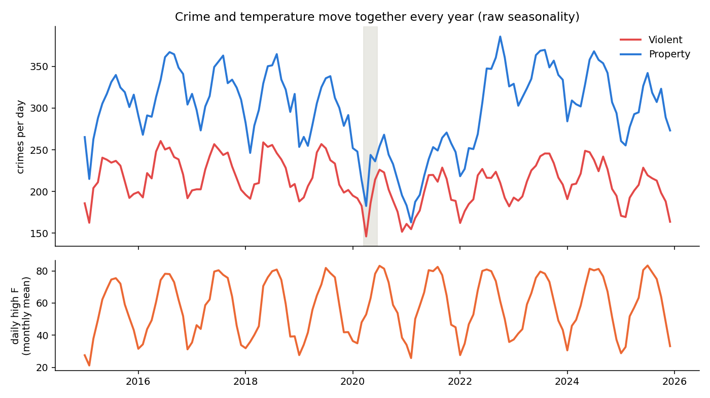
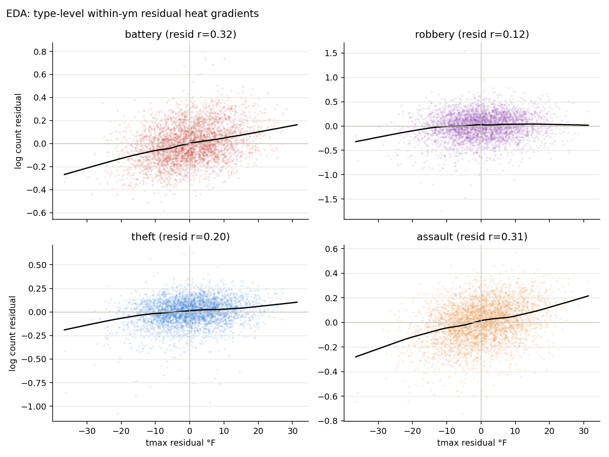
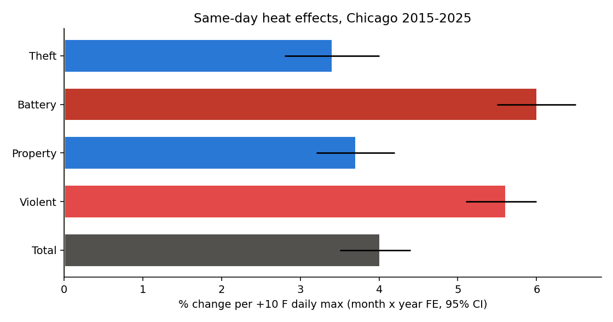
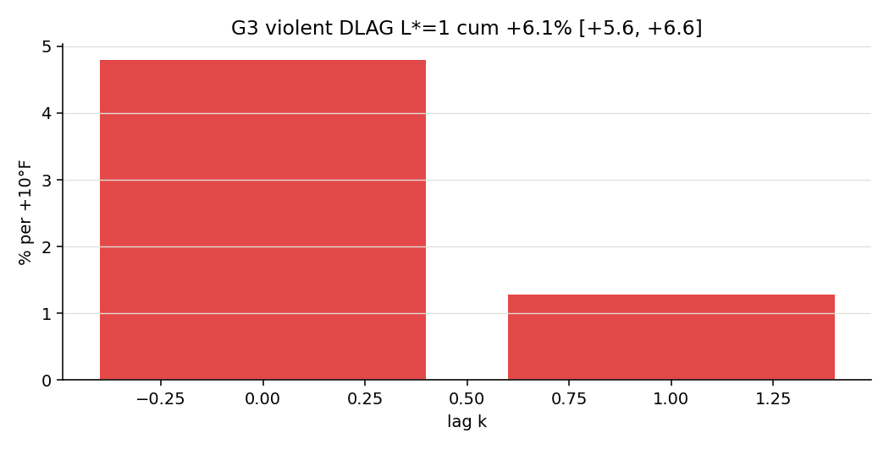
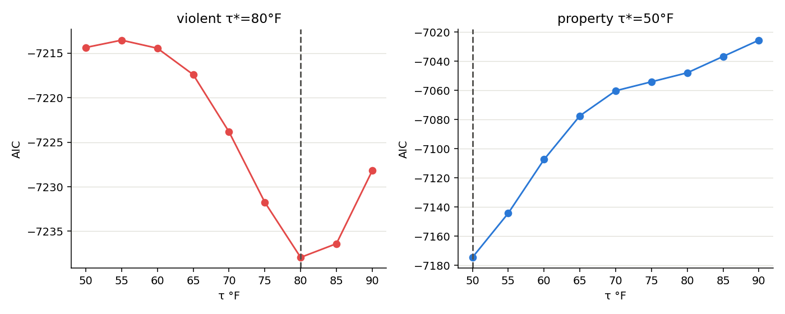
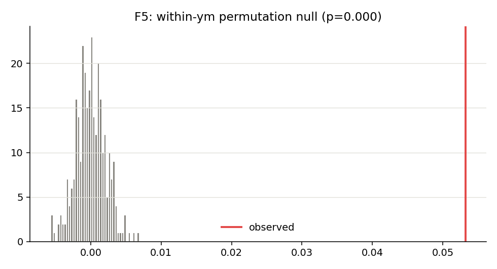
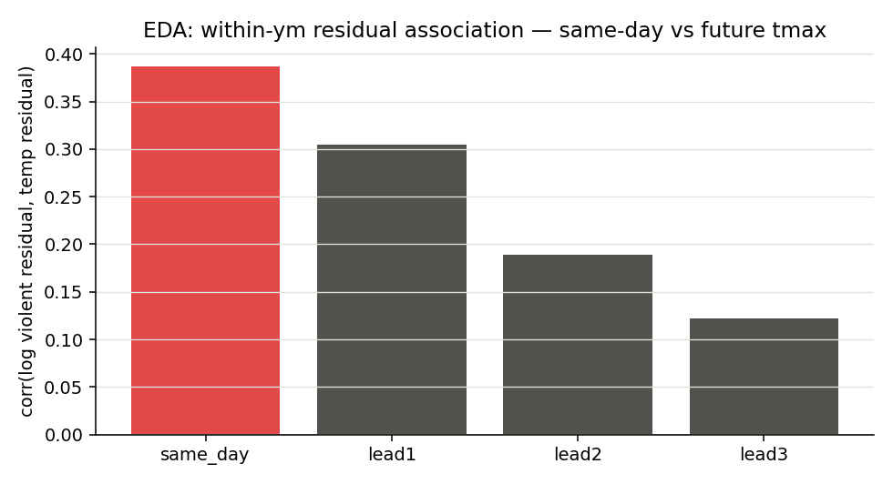
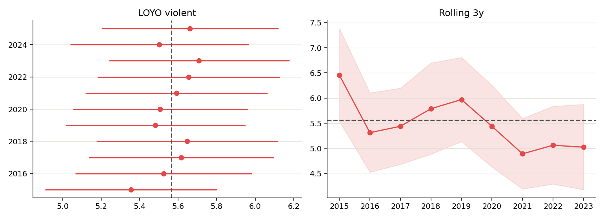

TL;DR
The short version
Take a day in Chicago that is 10°F hotter than other days in the same month of the same year. Hold day-of-week, holidays, rain, and snow fixed. Reported violent crime is about 5.6% higher on that hotter day. Property crime moves too, but less (~3.7%). The gap is real.
This is not “crime is high in July.” July is already stripped out. The model uses leftover day-to-day weather noise inside each month.
Battery drives the violent result. Hot days in a row compound rather than steal crime from tomorrow. Future temperature does not predict today’s crime. Dropping 2020, the unrest week, or any single year barely moves the number.
What this is not: proof of pure aggression, a neighborhood map, or a claim about unreported crime. It is a clean reduced-form fact about reported crime and heat at the city-day level.
The question that data can answer
Most things that move crime (poverty, policing, demographics) change slowly. Weather jumps overnight. That makes heat one of the cleaner daily shocks a city gets.
Heat and crime is an old Freakonomics-style question: take a behavioral claim people argue about, find a daily shock that is nearly as good as random, and measure it. The topic is not new. The fun is updating it with free city crime APIs, free reanalysis weather, a full 2015–2025 panel, month×year fixed effects, and a written stress-test suite. Not nostalgia. A clean same-month identification story on modern data.
Three bets, written before the models:
H1 · Level
Hotter days have more reported crime, all else equal.
CONFIRMEDH2 · Composition
Violent crime responds more, in percent terms, than property crime.
CONFIRMED · ~1.5×H3 · Shape
The response is not a straight line forever. Extreme heat might flatten or invert.
FLATTENS ~80°F · NO INVERTED-UImagine two Tuesdays in the same July. One is 78°F. One is 88°F. Same month, same year, same day-of-week structure, same rain flag. The second Tuesday is the experiment. Weather chose it. We count what the crime desk logged.
Routine-activity theory says heat puts more people outdoors and in contact. Heat-aggression research says heat shortens fuses. Both predict more interpersonal crime on hot days. Property crime should respond less once people (and their stuff) are already outside. City-day data cannot fully separate those channels. The gap between crime types is the tell that something behavioral is happening, not just “more tickets on nice weather.”
The data, and why you can trust it
2,757,885 reported crimes across 4,018 days (2015–2025), joined to ERA5 daily weather at the Loop. No API keys. Offline after first download.
Crime: City of Chicago Data Portal ijzp-q8t2 (CPD CLEAR). Weather: Open-Meteo ERA5, America/Chicago, °F. Primary predictor: daily maximum temperature. Violent = battery, assault, robbery, homicide, criminal sexual assault (both portal spellings). Property = theft, burglary, motor vehicle theft, criminal damage. Window ends 2025-12-31 to avoid recent reporting lag.
/* The decision that makes the project runnable on a laptop */
$select = date_trunc_ymd(date) AS day, primary_type, count(*) AS n
$group = day, primary_type
/* ~125k rows instead of ~2.8M incident rows */Criminal sexual assault appears under two spellings for years (rename transition). Both labels merge into violent. Each source incident has one primary type, so this is not double counting. “Total” crime is ~26% “other” (narcotics, deceptive practice, etc.). Headline modeling focuses on violent and property.
What the raw data shows (and what it does not prove)
Every summer, crime and temperature rise together. That chart is not the result. It is why you need fixed effects.

If you only look at “hot months have more crime,” you mixed heat with daylight, school calendars, tourism, and summer life. The model throws those away and keeps day-to-day weather surprises inside each month. Within a typical month, daily highs still swing about 9°F on average. Plenty of identifying variation.

The model, stated cleanly
One workhorse specification. Several stress tests. No black-box “the computer found heat” story.
For daily count Ct and daily high Tt:
log C_t = β · (T_t / 10) + α_month×year + δ_day-of-week + γ'W_t + ε_tW holds holiday, rain (≥1 mm), and snow-day flags. Report 100×(eβ − 1) as percent change per +10°F. Errors: Newey-West HAC with data-selected lag 9 (lag 14 as sensitivity). Count-model check: Poisson QMLE and Negative Binomial. Violent-vs-property gap: stacked regression with day-clustered errors.
M1 → M2
Calendar controls, then full month×year fixed effects. Tightening barely moves β. A pure seasonal artifact would collapse here.
STABLEM3 counts
Poisson and NegBin match log-OLS. The result is not an artifact of logging counts.
MATCHESM4 shape
Temperature bins plus AIC-selected spline (df=6). Formal kink search for violent crime at 80°F.
PLATEAUM5 – M6
Stacked gap test. Hottest-decile dummy and summer-only ≥90°F vs 70s. Not “just summer.”
HOLDSWe ask whether unusually hot days, compared with other days in the same month, show more crime reports. Then whether violence moves more than property, whether the curve flattens at the top, and whether the result dies when we change the estimator or drop weird years.
Results
Same-day heat moves reported crime. Violence moves more. Hot spells add memory. Extreme heat plateaus rather than reverses.

| Outcome | % per +10°F | 95% CI | Note |
|---|---|---|---|
| Total crime | +4.0% | [+3.5, +4.4] | Mixture of motives |
| Violent | +5.6% | [+5.1, +6.0] | Public headline |
| Property | +3.7% | [+3.2, +4.2] | ~1.5× smaller than violent |
| Battery only | +6.0% | [+5.5, +6.5] | 59% of violent volume |
| Theft only | +3.4% | [+2.8, +4.0] | Property core |
| Hot spell (cumulative, L*=1) | +6.1% | [+5.6, +6.6] | Same-day + lag memory |


Within June–August only, days ≥90°F still show higher violent crime than same-summer 70s days (~+2.5%). Property shows nothing in that cut. Heat is not a costume for “it was July.”
Stress tests
If a finding only lives in one specification, it is not a finding.
| Test | What we asked | What happened | |
|---|---|---|---|
| F1 Leads | Does tomorrow’s heat predict today’s crime? | Same-day +5.1%. Lead-1 +0.6%. Lead-2 +0.3%. | PASS |
| F2 Components | Is “violent” battery-heavy behavior? | Battery +6.0%. Assault +5.7%. Robbery +3.5%. Theft +3.4%. | PASS |
| F3 Heat index | Does “feels like” overturn dry-bulb? | Per residual SD, tmax / apparent / heat-index sit near 4.6–5.1%. Tmax stays public. | PASS |
| F4 Inference | Do HAC-9, HAC-14, week clusters, HC1 disagree? | All print +5.6% for violence. | PASS |
| F5 Permutation | Shuffle temperature inside each month 300 times. | Observed residual slope is extreme. p ≈ 0. | PASS |
| F6 Influence | Drop unrest, New Year’s, top 1% days, all of 2020. | Every shift under 0.1 percentage points. | PASS |
| F7 FDR | Many outcomes, honest multiple testing. | Benjamini-Hochberg still clears total, violent, property, battery. | PASS |


What we tuned (and what we refused to fake)
Bandwidth, lag order, and shape flexibility. Chosen with Newey-West theory and AIC/BIC. Not a random forest sold as causality.
HAC lag = 9
Newey-West rule of thumb for T≈4,018, confirmed on an SE grid. Original lag 14 was slightly conservative. Point estimate unchanged.
Distributed lag L* = 1
AIC and BIC agree for violence. Same-day + lag memory → cumulative +6.1%.
Kink at 80°F
Piecewise linear search by AIC. Rises, then flattens. Not an inverted-U.
Per-1SD treatment race
Mean temperature looks “bigger” per +10°F because means move less. On a within-month SD scale, tmax and tmean are close. Public treatment stays daily max.

# Workhorse, once the panel exists
log(violent) ~ tmax10 + C(ym) + C(dow) + holiday + rain + snow_day
# cov: HAC(maxlags=9)
# report: 100 * expm1(coef['tmax10'])A tale of two AI minds
July 2026. One human directing. Two models. Not a contest. A handoff with a real constraint.
This heat study is one of two AI-built Freakonomics-style portfolio pieces worked in July 2026. The other is Do UFOs Follow the News Cycle? (618k reports, media and misidentification, Claude-led). Neither write-up was invented on publish day. Both were planned as a pair: public data, behavioral framing, full attack surface, hand-built HTML articles.
Max model starts. Smart cheaper model finishes. Claude Fable 5 on Claude Max opens a blank folder and builds the first complete analysis. Grok 4.5 on SuperGrok takes that draft and does the second-pass work: validation depth, residual EDA, bandwidth and lag selection, falsification, shared modules, and this article. Neither is “the better model.” Different tools, different tasks.
Claude Max is excellent for greenfield velocity, but it rate-limits on a roughly five-hour cycle. Mid-project, that clock stops a long session cold. SuperGrok / Grok 4.5 is available on the X side (poster access, paid). When Max is limited, or when the job is audit-and-attack rather than blank-page build, the work continues on Grok instead of waiting. Capacity and task fit, not a scoreboard of which model is smarter.
| Tool | Task fit | What that pass shipped |
|---|---|---|
| Claude Fable 5 Max · 2 heavy prompts |
Greenfield velocity. Super-prompt to working portfolio notebook. Until the 5-hour Max limit hits. | SoQL aggregation, weather join, full M1–M6 ladder, first figures, sensitivity table, first findings. Scaffold that made the project real in one sitting. |
| Grok 4.5 SuperGrok · rest of the work |
Keep building when Max is limited. Audit, selection, stress tests, packaging. | Data QA and manifest, residual EDA, Model Lab (HAC, DLAG, kink, LOYO), F1–F7 falsification, panel.py / models.py, integration, this page. |
Plan first. Run second. Human decides what ships. Notebook runs offline top to bottom. Model lab is one command. This page is hand-written HTML, not a notebook dump. For the code path a strong DS can follow in the repo, see the project README.
Limits, stated plainly
- Reported crime is not occurrence. Weather can change reporting as well as behavior. The violent-vs-property gap argues against a pure reporting story. It does not kill it.
- City-day aggregation. One number for ~2.7 million people. Neighborhood heat and income gaps are invisible here.
- One weather point. Loop ERA5 is a noisy proxy for city exposure. Classical measurement error pushes coefficients toward zero.
- Mechanism still bundled. Opportunity and aggression both predict more violence on hot days. Hourly or indoor-outdoor splits would help separate them.
- One city, one decade. Leave-one-year-out is stable. External validity is an empirical question for the next city.
Reproduce
This page is the write-up. The Python path (panel, FE fit, lab, falsification) lives in the GitHub folder with a full follow-along README:
heat-and-crime/README.md.
Fastest check: examples/headline_fit.py.
cd heat-and-crime
pip install -r requirements.txt
python examples/headline_fit.py # +5.6% path
python examples/leads_placebo.py # F1 leads
python run_model_lab.py # full G0-G7 + F1-F7
python run_eda_diagnostics.pyWith data/ present, runs are offline. Public APIs only. Manifest hashes lock the cache.
Scoreboard
What to remember
- +10°F daily max → +5.6% violent crime the same day, inside month×year cells. Total +4.0%. Property +3.7%.
- Violence responds ~1.5× property. Battery +6.0% is the core.
- Hot spells compound to about +6.1% cumulative (AIC lag order 1).
- Shape: rises then flattens near 80°F. No inverted-U in this range.
- Not just summer: within Jun–Aug, 90°F+ days still elevate violence vs 70s.
- Stress tests: leads small, permutation extreme, influence cuts tiny, FDR clear.
- Build: Claude Fable scaffolded the notebook in two prompts (July 2026). Grok 4.5 did the audit, lab, stress tests, and this article. Max starts. Smart cheap finishes. Different tools, different tasks.